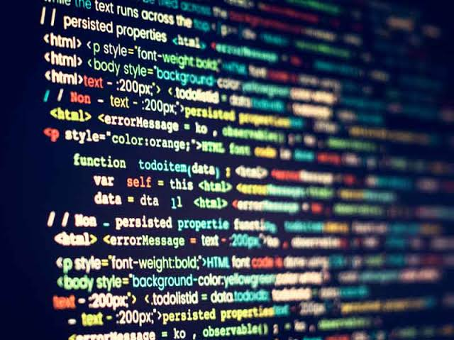
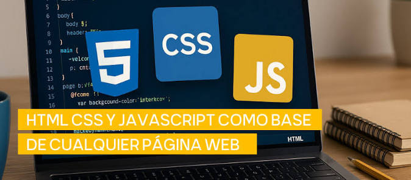
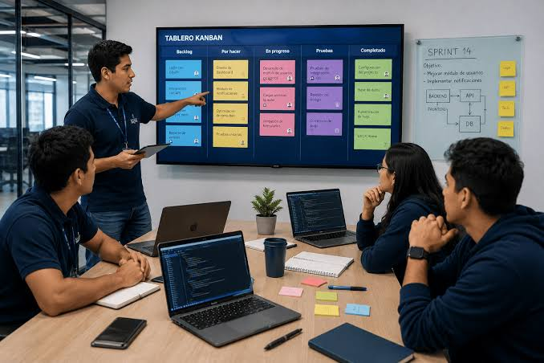

DESARROLLO DE SOFTWARE
Crea. Programa. Innova.
La especialización de Desarrollo de Software te permite conocer el mundo de la programación, la tecnología y la creación de soluciones digitales.
¿Qué es Desarrollo de Software?
El Desarrollo de Software es el área de la informática dedicada a crear y mantener programas, aplicaciones y sitios web que respondan a diferentes necesidades. Para ello, se analizan problemas, se planifican soluciones, se escribe y prueba código y se realizan mejoras. Este proceso combina el pensamiento lógico, la creatividad y el uso de herramientas tecnológicas.

Utilizar lenguajes y herramientas para desarrollar software.¿Qué aprenderás?
La formación en Desarrollo de Software puede abarcar diferentes áreas de la informática. Estas permiten comprender cómo se construyen los programas, cómo se organiza la información y cómo se diseñan las herramientas digitales que utilizamos diariamente. Los conocimientos se pueden desarrollar progresivamente mediante explicaciones, ejercicios, prácticas y proyectos.

Conocerás cómo crear páginas y sitios web utilizando tecnologías como HTML, CSS y JavaScript.Tres tecnologías fundamentales para el desarrollo web
HTML: permite organizar el contenido de una página web mediante elementos como títulos, párrafos, imágenes, enlaces, listas y formularios.
CSS: se utiliza para definir la presentación visual de una página, incluyendo colores, tipografías, espacios, distribuciones, bordes y adaptación a distintos tamaños de pantalla.
JavaScript: permite incorporar comportamientos interactivos, responder a las acciones del usuario, validar formularios y actualizar elementos de una página.
Estas tecnologías cumplen funciones diferentes y pueden combinarse para construir experiencias web organizadas, atractivas e interactivas.
¿Qué puedes llegar a crear?
Con los conocimientos de Desarrollo de Software podrás crear diferentes proyectos digitales.
Páginas web
Sitios para presentar información, imágenes y servicios en internet.
Aplicaciones
Herramientas digitales para dispositivos móviles que facilitan diferentes actividades.
Programas
Software para realizar tareas y resolver necesidades específicas.
Sistemas de Información
Sistemas para almacenar, organizar y consultar datos.
Videojuegos
Juegos interactivos que combinan programación, imágenes y sonidos.
Soluciones tecnológicas
Herramientas digitales para resolver problemas.
👨💻 Posibles profesiones
| Profesión | ¿Qué hace? |
|---|---|
| 🧑💻 Desarrollador web | Crea y mantiene sitios web. |
| 📱 Desarrollador de aplicaciones | Desarrolla aplicaciones para diferentes dispositivos. |
| 🖥️ Programador | Crea programas utilizando código. |
| 🗄️ Especialista en bases de datos | Organiza y administra información. |
| 🎮 Desarrollador de videojuegos | Crea experiencias y videojuegos interactivos. |
| 🎨 Diseñador UI/UX | Diseña interfaces y experiencias digitales. |
¿Cómo se relacionan estas profesiones?
Las áreas profesionales del software pueden complementarse. Por ejemplo, un proyecto web puede requerir una persona que desarrolle la interfaz, otra que trabaje en la lógica del sistema y tareas relacionadas con el almacenamiento de datos y las pruebas. En proyectos pequeños, una misma persona puede encargarse de varias de estas responsabilidades.
Habilidades que desarrollarás
Habilidades técnicas
Las habilidades técnicas están relacionadas con las herramientas y los procedimientos utilizados para crear software. Incluyen comprender instrucciones, escribir y revisar código, organizar datos, estructurar páginas web y probar las funciones de un programa.
- Programación
- Desarrollo web
- Bases de datos
- Lógica computacional
- Diseños de interfaces
- Resolución de problemas
Habilidades personales
Las habilidades personales ayudan a afrontar los retos de un proyecto. La paciencia permite revisar errores con calma, la organización facilita dividir el trabajo en tareas y la comunicación ayuda a explicar decisiones, compartir avances y comprender las necesidades de otros.
- Creatividad
- Trabajo en equipo
- Pensamiento crítico
- Paciencia
- Organización
- Comunicación
- Aprendizaje continuo
¿Cómo es estudiar Desarrollo de Software?
¿Qué voy a hacer durante la especialización?
El desarrollo de un proyecto suele comenzar con la comprensión de una necesidad y continúa con la planificación, el diseño, la programación y las pruebas. Sin embargo, estas actividades no siempre ocurren una sola vez ni en un orden rígido: cuando una prueba descubre un problema o cambia un requisito, puede ser necesario regresar a una etapa anterior y realizar ajustes.
Investigar 🔎
Comprender un problema o necesidad.
Planificar 📝
Pensar cómo solucionarlo.
Diseñar 🎨
Crear la estructura y apariencia de la solución.
Programar 💻
Convertir la solución en código.
Probar 🧪
Buscar errores y comprobar que funcione.
Mejorar 🚀
Corregir problemas y agregar nuevas funciones.
🌐 ¿Dónde se puede aplicar?
El Desarrollo de Software está presente en diferentes áreas de nuestra vida y permite crear soluciones para distintas necesidades.
Educación
Plataformas para aprender, consultar materiales y realizar actividades escolares.
Salud
Sistemas para organizar citas, registros y administrar información médica.
Empresas y negocios
Programas para gestionar inventarios, ventas y actividades comerciales.
Comunicación y entretenimiento
Aplicaciones de mensajería, redes sociales y videojuegos.
Servicios públicos
Herramientas para consultar información y realizar trámites.
Investigación científica
Programas para analizar datos, realizar cálculos y presentar resultados.
Calidad y responsabilidad en el desarrollo de software
Crear software también implica desarrollar herramientas seguras, fáciles de utilizar y adecuadas para las necesidades de las personas.
Seguridad y privacidad
Proteger los sistemas y los datos personales frente a accesos no autorizados y usos inadecuados.
Usabilidad
Crear herramientas fáciles de comprender y utilizar, con funciones e instrucciones claras.
Accesibilidad
Facilitar que personas con diferentes capacidades puedan navegar y utilizar las herramientas digitales.
Mantenimiento y mejora continua
Corregir errores, actualizar funciones y adaptar los programas a nuevas necesidades.
FORMACIÓN ACADÉMICA
¿Qué materias estudiarás?
Conoce las asignaturas que complementan tu formación en Desarrollo de Software.
Tecnología y programación
Materias enfocadas en la programación, la tecnología y el desarrollo del pensamiento lógico.
Programación Estructurada
Algoritmos, instrucciones y estructuras básicas de programación.
Fundamentos de las TIC
Conceptos y herramientas de las tecnologías de información y comunicación.
Base de Datos
Organización y gestión de información.
Aplicaciones de Escritorio
Creación de programas para computadoras.
Pensamiento Computacional
Análisis de problemas y soluciones mediante la lógica.
Ciencias y razonamiento
Asignaturas que fortalecen el razonamiento, el análisis y la comprensión científica.
Matemática
Razonamiento lógico y resolución de problemas.
Física
Estudio de los fenómenos físicos.
Química
Propiedades y transformaciones de la materia.
Biología
Estudio de los seres vivos y sus procesos.
Módulo Práctico Experimental
Aplicación de conocimientos mediante prácticas.
Formación general
Materias que complementan tu formación académica, personal, social y ciudadana.
Inglés
Lengua y Literatura
Historia
Filosofía
Emprendimiento
Educación Física
Educación para la Ciudadanía
Cívica y Acompañamiento Integral en el Aula
Ética, Legislación y Ciudadanía Digital
ECA
⚖️ Ventajas y desafíos
Estudiar Desarrollo de Software ofrece diferentes oportunidades, pero también implica algunos retos.
✅ Ventajas
💡
Desarrolla la creatividad
Permite transformar ideas en proyectos y soluciones digitales.
🚀
Permite crear proyectos propios
Puedes desarrollar páginas web, aplicaciones y otros proyectos.
🧩
Mejora la resolución de problemas
La programación ayuda a analizar problemas y encontrar soluciones.
🌎
Se aplica en diferentes áreas
El software puede utilizarse en educación, salud, empresas, entretenimiento y más.
⚠️ Desafíos
📚
Requiere práctica constante
Para mejorar en programación es necesario practicar y aprender continuamente.
🧠
Algunos problemas pueden ser difíciles
Resolver errores y encontrar soluciones puede requerir tiempo y análisis.
🔎
Necesitas paciencia
Los errores forman parte del proceso y tendrás que aprender a solucionarlos.
🔄
La tecnología cambia constantemente
Es importante mantenerse actualizado y continuar aprendiendo.
🧠 ¿Te identificas?
Desarrollo de Software puede ser una buena opción para ti si te interesan la tecnología, la creatividad y la resolución de problemas.
💻
Te interesa la tecnología
Te da curiosidad conocer cómo funcionan las computadoras, aplicaciones y páginas web.
🧩
Te gustan los retos
Disfrutas buscar soluciones cuando encuentras un problema.
🔎
Eres curioso
Te gusta investigar y descubrir cómo funcionan las cosas.
🎨
Te gusta crear
Te interesa transformar tus ideas en proyectos y soluciones digitales.
🧠
Te gusta la lógica
Disfrutas los acertijos, juegos de lógica y problemas que requieren pensar.
🚀
Quieres aprender
Tienes interés en aprender nuevas herramientas y tecnologías.
💡 ¿Te identificaste con varias?
Si varias de estas características te representan, Desarrollo de Software podría ser una especialización que te interese explorar.
Descubrir si es para mí🚀 Ruta de aprendizaje
Conoce algunas de las etapas que puedes recorrer durante tu formación en Desarrollo de Software.
1
🌱
Fundamentos
Conocer los conceptos básicos de la informática, el software y la programación.
2
🧠
Lógica de programación
Aprender a analizar problemas y plantear soluciones paso a paso.
3
💻
Programación
Aprender a utilizar lenguajes de programación para crear diferentes soluciones.
4
🌐
Desarrollo web
Crear páginas y aplicaciones web utilizando tecnologías como HTML, CSS y JavaScript.
5
🗄️
Bases de datos
Aprender a almacenar, organizar y consultar información de manera estructurada.
6
🚀
Proyecto
Aplicar los conocimientos adquiridos para desarrollar un proyecto de software.
❓ Preguntas frecuentes
Conoce las respuestas a algunas de las preguntas más comunes sobre la especialización de Desarrollo de Software.
¿Necesito saber programar antes de estudiar esta especialización?
No. Puedes comenzar aprendiendo desde los conceptos básicos y avanzar poco a poco mientras desarrollas tus habilidades.
¿Qué lenguajes de programación puedo aprender?
Dependiendo de la formación, puedes conocer lenguajes y tecnologías como JavaScript, Python, Java u otros.
¿Tengo que ser bueno en matemáticas?
Las matemáticas pueden ser útiles, pero no necesitas ser excelente en ellas. También son importantes la lógica, la creatividad y la capacidad para resolver problemas.
¿Es necesario tener una computadora potente?
Para comenzar a aprender programación y desarrollo web, normalmente es suficiente una computadora que pueda ejecutar herramientas básicas de programación.
¿Qué puedo hacer después de estudiar esta especialización?
Puedes continuar tus estudios en carreras relacionadas con tecnología, programación, sistemas, desarrollo web y otras áreas de informática.
¿Qué diferencia existe entre una página web y una aplicación web?
Una página web suele presentar contenido específico, como información, imágenes o noticias. Una aplicación web, además de presentar contenido, permite realizar tareas e interactuar con sus funciones, por ejemplo registrar información, completar formularios o consultar resultados personalizados. La diferencia depende de las funciones que tenga cada producto.
🚀 TU FUTURO COMIENZA HOY
¿Tu futuro está en la tecnología?
Descubre si Desarrollo de Software puede ser una especialización adecuada para ti.
Responde algunas preguntas sobre tus intereses, habilidades y gustos para conocer qué tan relacionado está tu perfil con el mundo de la tecnología.
Realizar test de orientación →
DESCUBRE MÁS
Explora otras especializaciones
Desarrollo de Software
Aprende programación, desarrollo web, bases de datos y creación de proyectos tecnológicos.
✓ Estás aquíGestión Financiera
Conoce el mundo de las finanzas, la administración, los negocios y la gestión de recursos.
Conocer especialización →Ciencias
Explora las ciencias, la investigación y el análisis de fenómenos naturales y científicos.
Conocer especialización →